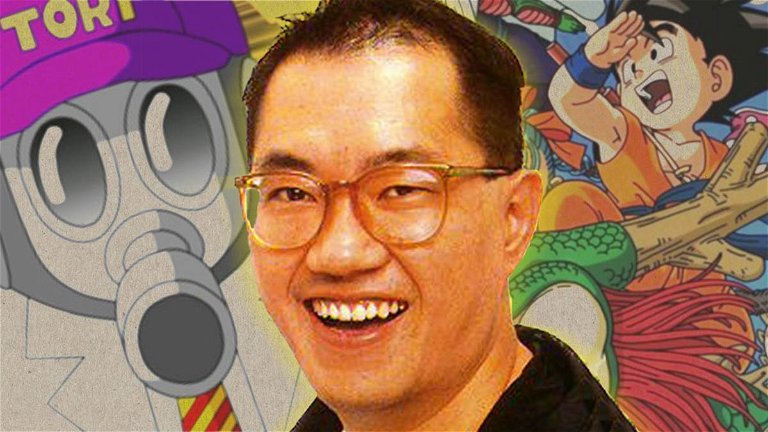

Dragon Ball
La serie sigue las aventuras de Son Goku desde su infancia hasta la edad adulta mientras entrena en artes marciales y busca las legendarias Dragon Balls para conceder cualquier deseo.
Precio: €12.99
Dragon Ball es un manga japonés escrito e ilustrado por Akira Toriyama. Se serializó en la revista Weekly Shonen Jump de Shueisha desde diciembre de 1984 hasta junio de 1995, con los capítulos individuales recopilados y publicados en volúmenes de tankobon por la misma editorial.
Información del Autor
Akira Toriyama es un mangaka japonés nacido el 5 de abril de 1955 en la prefectura de Aichi, Japón. Es más conocido por ser el creador del manga "Dragon Ball", una de las series más icónicas y populares de la historia del manga y el anime.
Toriyama se inspiró en su amor por las artes marciales, la mitología china y la ciencia ficción para crear el mundo y los personajes de "Dragon Ball". La serie ha sido elogiada por su humor, sus emocionantes batallas y su imaginativa historia.
En resumen, Akira Toriyama es un mangaka talentoso cuyo trabajo ha dejado una marca indeleble en la cultura popular con su obra maestra "Dragon Ball". Su creatividad, ingenio y habilidad para contar historias lo han convertido en uno de los autores más influyentes en la industria del entretenimiento japonés.
Sagas Principales
| Saga | Descripción | Capítulos |
|---|---|---|
| Saga del Emperador Pilaf | Goku y sus amigos buscan las Dragon Balls mientras se enfrentan al malvado Emperador Pilaf y sus secuaces. | 1-28 |
| Saga del Entrenamiento de la Red Ribbon | Goku se enfrenta a la Red Ribbon Army para detener sus planes de dominación mundial. | 29-68 |
| Saga del Torneo Mundial de las Artes Marciales | Goku y sus amigos compiten en el Torneo Mundial de las Artes Marciales contra los luchadores más fuertes del mundo. | 69-101 |
| Saga del Rey Demonio Piccolo | Goku lucha contra el malvado Rey Demonio Piccolo para salvar al mundo de la destrucción. | 102-135 |
| Saga de Vegeta | Goku y sus amigos se enfrentan a los Saiyanos invasores y descubren la verdad sobre el origen de Goku. | 136-165 |
| Saga de Freezer | Goku y sus amigos viajan al Planeta Namek en busca de las Dragon Balls y luchan contra el malvado tirano Freezer. | 166-209 |
| Saga de Cell | Goku y sus amigos se enfrentan al poderoso bio-androide Cell en un épico enfrentamiento por el destino del mundo. | 210-291 |
| Saga de Majin Buu | Goku y sus amigos luchan contra el poderoso Majin Buu y sus formas malvadas para salvar al mundo una vez más. | 292-336 |